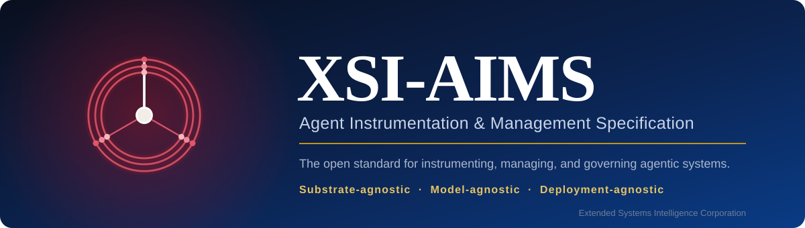
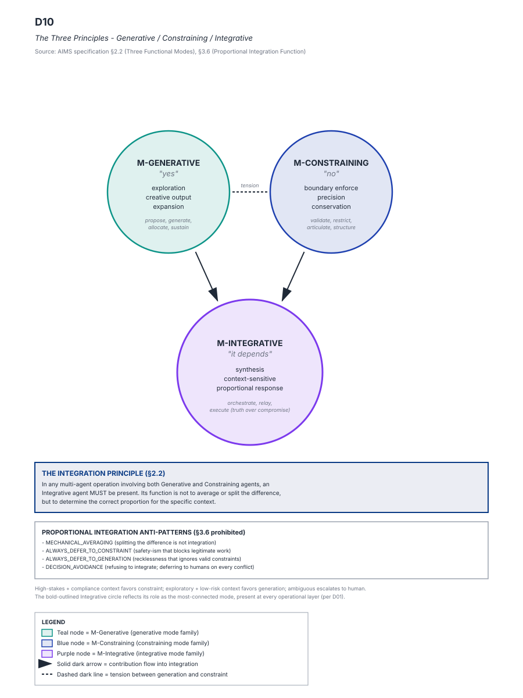
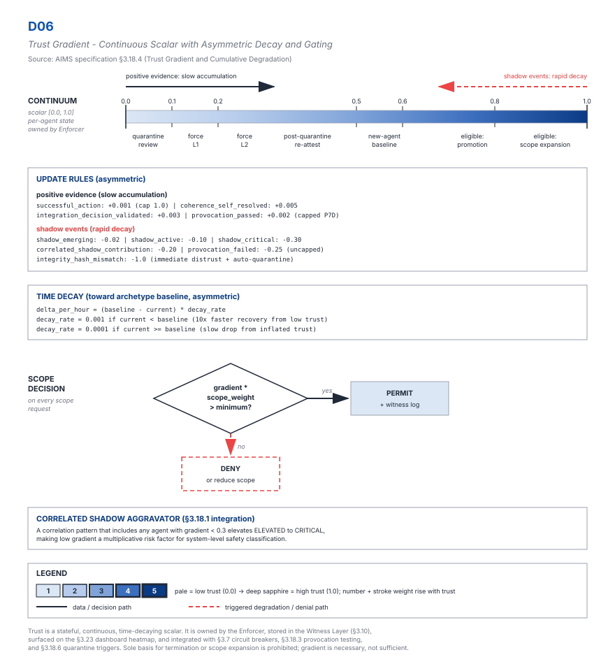

The open standard for instrumenting, managing, and governing agentic systems.
Substrate-agnostic · Model-agnostic · Deployment-agnostic
What is XSI-AIMS
XSI-AIMS specifies horizontal supervisory-agent governance — a framework for the safe deployment of agents that monitor and manage other agents on behalf of a system's principals. It defines the contracts an agentic system must meet — registration, communication, audit, lifecycle, supervision, and conformance — without prescribing the implementing technology. It is implementation-neutral by construction: a sovereign-cloud orchestrator, an on-premises deployment, and a regulator's reference platform can all claim conformance against the same text.
Key concepts


Conformance
FULL
The entire topology and safety substrate.PARTIAL
Core management components plus the AIP wire format and IAME envelope.OBSERVER
Consumes AIP and IAME read-only.Implementations declare their level in the AIP handshake and in public documentation. Conformance is full or none at the level claimed. See the specification and the figure set.
Standards alignment
The normative surface references cross-industry foundations wherever one exists — OpenTelemetry semantic conventions, ISO 27001, ISO 42001, the NIST AI Risk Management Framework, the IEEE 7000-series, the EU AI Act, and FIPS 203/204/205.